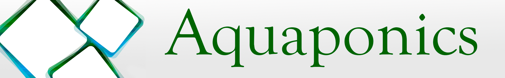
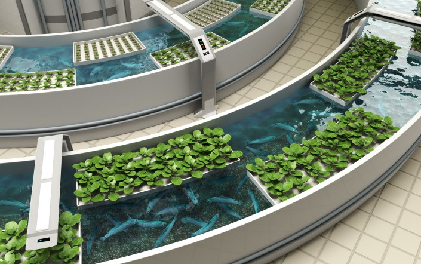
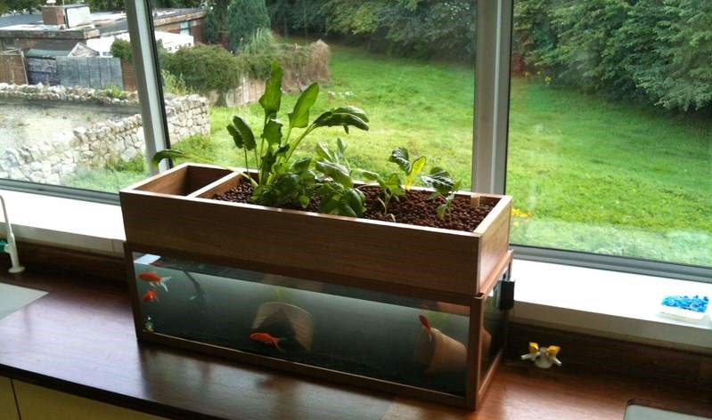

Главная
Github
об Arduino
Софт
Аквапоника - устройство, обеспечивающее искусственную экосистему, в которой ключевыми являются три типа живых организмов: водные животные, растения и бактерии.
Контакты
Работает по принципу экосистемы рыб и растений: рыбы обеспечивают питание растениям, а растения очищают воду.
 
Наша аквапоника работает на основе апаратно-вычислительной платформы "Ардуино".
Перейти на страницу описания...